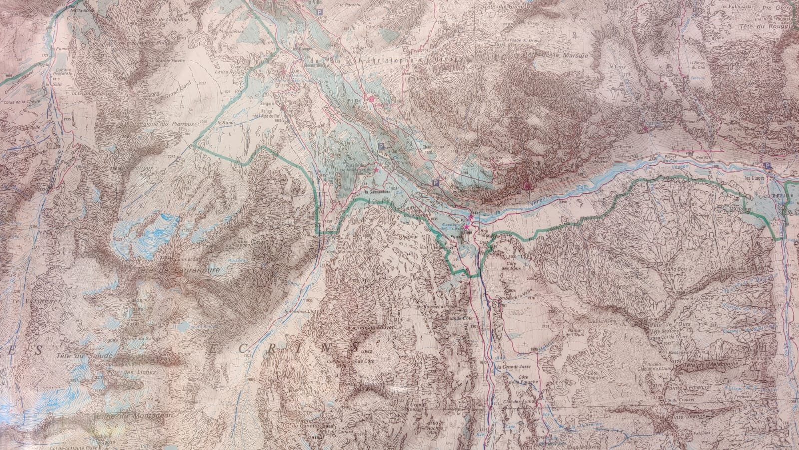
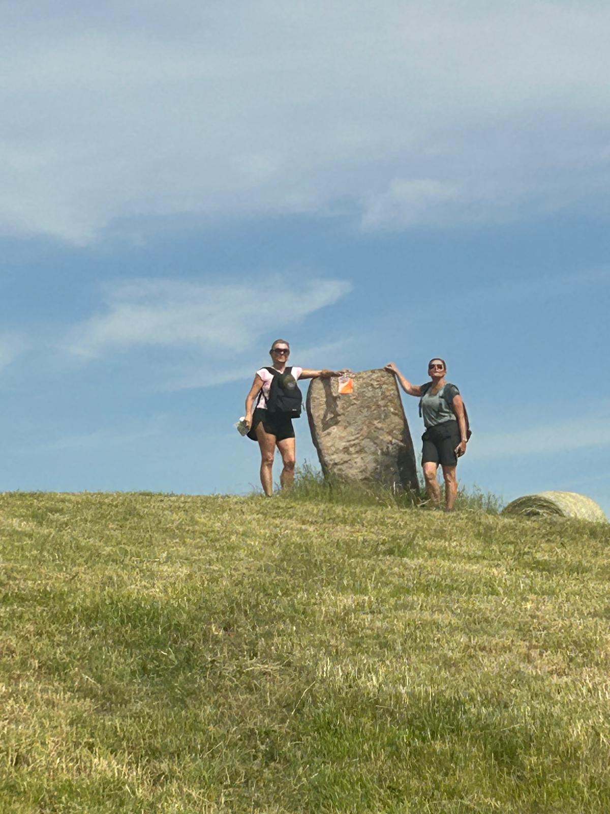
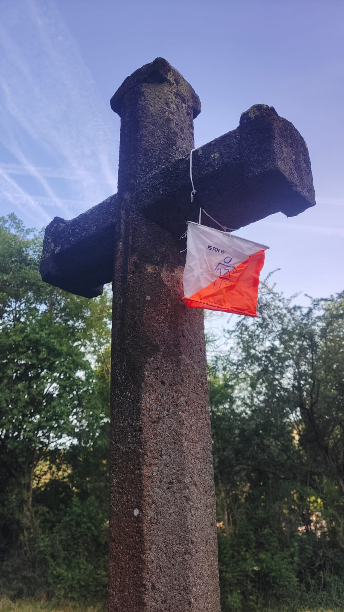
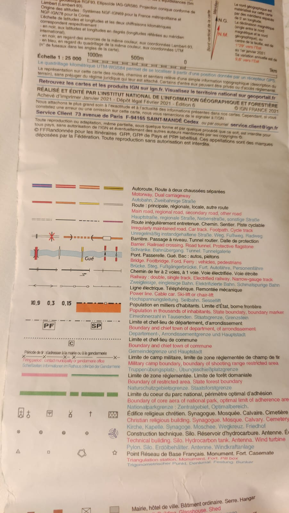

Orientation · cartographie
Formation à la lecture de cartes et à l’orientation
Une journée pour devenir autonome, confiant et efficace en montagne.

Lire le terrain au-delà de l’écran
Savoir utiliser une application GPS en randonnée, c’est bien. Mais savoir lire et interpréter une carte topographique, c’est indispensable.
Aujourd’hui, nos smartphones nous indiquent notre position avec une précision étonnante, et beaucoup de randonneurs ont l’impression que cela suffit. Pourtant, le terrain réel ne se résume jamais à un point sur un écran. Et on n’a pas toujours du réseau ! Pour évoluer en sécurité, anticiper les difficultés et prendre de bonnes décisions, il faut comprendre ce que la carte raconte : pentes, dénivelés, forêts, alpages, falaises, éboulis, orientation du relief, altitude… Tout cela ne s’improvise pas.

Comprendre les limites d’une trace GPS
Les traces GPS téléchargées sur Internet semblent rassurantes, mais elles peuvent être trompeuses. Ont-elles été réalisées par un expert habitué au terrain raide ? Ont-elles été parcourues par beau temps sec, alors que le même passage devient glissant sous la pluie ? Et si vous voulez les adapter ou couper pour raccourcir, comment faire si vous ne savez pas analyser la carte ?
Il m’est arrivé de rencontrer des randonneurs cherchant « un chemin bleu » alors qu’il s’agissait d’un torrent indiqué en bleu sur la carte… ou des personnes qui se fiaient aveuglément à leur application GPS sans comprendre que la « ligne » qu’elles suivaient n’était pas un sentier, mais une limite administrative. Cette méconnaissance peut entraîner de mauvaises décisions, des demi-tours tardifs, des situations délicates, voire des secours mobilisés en pleine nuit.


Une formation pratique sur le terrain
Pourtant, devenir autonome est à la portée de tous !
Je vous propose une formation pratique en orientation d’une journée, spécialement conçue pour apprendre à lire une carte, l’orienter, interpréter le relief, comprendre les symboles, analyser une trace GPS et faire le lien entre la carte et le terrain réel. Cette formation est idéale pour les randonneurs qui souhaitent progresser, et indispensable pour toute personne amenée à encadrer un groupe en montagne.

Dans une ambiance conviviale, sur le terrain, vous développerez des réflexes simples, concrets et efficaces. Vous gagnerez en autonomie et en confiance, et vous transformerez vos randonnées en explorations maîtrisées et passionnantes.
Rejoignez-moi à Allemond, au cœur de l’Oisans, pour vivre une expérience enrichissante et devenir acteur de votre sécurité.